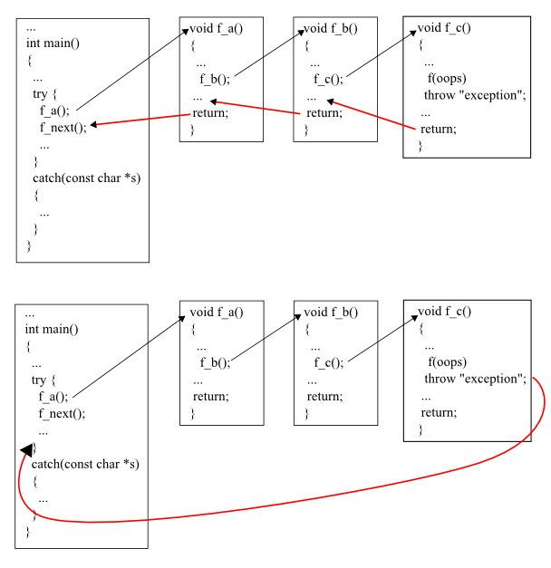

Stack Unwinding - 2017
Stacks are last-in, first-out (LIFO) data structures, in other words, the last item pushed (inserted) on the stack is the first item popped (removed) from it. To understand how C++ performs function calls, we should know it's using a stack data structure.
The function call stack supports the function call/return mechanism. It also supports the creation, maintenance and destruction of each called function's automatic variables. This LIFO behavior is exactly what a function does when returning to the function that called it.
Since the call stack is organized as a stack, the caller pushes the return address onto the stack, and the called function, when it finishes, pops the return address off the call stack and transfers control to that address. If a called function calls on to yet another function, it will push another return address onto the call stack, and so on, with the information stacking up and unstacking as the program dictates.
So, we must keep track of the return addresses that each function needs to return control to its caller. The function call stack is the perfect data structure for handling this information. Each time a function is called, an entry is pushed onto the stack. This entry, called a stack frame, activation frame or an activation record, contains the return address that the called function needs to return to the calling function. When the called function returns, the stack frame for the function call is popped, and control transfers to the return address in the popped stack frame.
Each called function always finds the information it needs to return to its caller at the top of the call stack. And, if a function makes a call to another function, a stack frame for the new function call is simply pushed onto the call stack. Thus, the return address required by the newly called function to return to its caller is now located at the top of the stack.
Using a stack to save the return address has important advantages over alternatives. One is that each task has its own stack, and thus the function can be reentrant, that is, can be active simultaneously for different tasks doing different things. Another benefit is that recursion is automatically supported. When a function calls itself recursively, a return address needs to be stored for each activation of the function so that it can later be used to return from the function activation. This capability is automatic with a stack.
The stack frames have another important responsibility. Most functions have automatic (local) variables. These variables that are known only within the active function and do not retain values after it returns. It is often convenient to allocate space for this use by simply moving the top of the stack by enough to provide the space. This is very fast compared to heap allocation. Note that each separate activation of a function gets its own separate space in the stack for locals.
The called function's stack frame is a perfect place to store the function's automatic variables. That stack frame exists as long as the called function is active. When that function returns, and no longer needs its local automatic variables, its stack frame is popped from the stack, and those local automatic variables are no longer there.

To call a function f(x)...
- Evaluate the actual parameter expressions, such as the x, in the caller's context.
- Allocate memory for f()'s locals by pushing a suitable local block of memory onto a runtime call stack dedicated to this purpose. For parameters but not local variables, store the values from step (1) into the appropriate slot in f()'s local block.
- Store the caller's current address of execution (its return address) and switch execution to f().
- f() executes with its local block conveniently available at the end of the call stack.
- When f() is finished, it exits by popping its locals off the stack and returns to the caller using the previously stored return address. Now the caller's locals are on the end of the stack and it can resume executing.
As an addition note for the function call process:
- This is why infinite recursion results in a Stack Overflow Error - the code keeps calling and calling resulting in steps (1) (2) (3), (1) (2) (3), but never a step (4)....eventually the call stack runs out of memory.
- This is why local variables have random initial values - step (2) just pushes the whole local block in one operation. Each local gets its own area of memory, but the memory will contain whatever the most recent tenant left there. To clear all of the local block for each function call would be too time expensive.
- The local block is also known as the function's activation record or stack frame. The entire block can be pushed onto the stack (step 2), in a single CPU operation - it is a very fast operation.
- For a multithreaded environment, each thread gets its own call stack instead of just having single, global call stack.
- For performance reasons, some languages pass some parameters through registers and others through the stack, so the overall process is complex. However, the apparent the lifetime of the variables will always follow the stack model presented here.
The amount of memory is finite, so only a certain amount of memory can be used to store activation records on the function call stack. If more function calls occur than can have their activation records stored on the function call stack, an error known as stack overflow occurs. In other words, if the pushing consumes all of the space allocated for the call stack, an error called a stack overflow occurs, generally causing the program to crash.
Adding a subroutine's entry to the call stack is sometimes called winding. Conversely, removing entries is called unwinding.
A call stack is a stack data structure that stores information about the active functions. The call stack is also known as an execution stack, control stack, function stack, or run-time stack. The main reason for having a call stack is to keep track of the point to which each active function should return control when it completes executing. Here, the active functions are those which have been called but have not yet completed execution by returning.
Before we look into the exception aspect of the call stack, let's look at how C++ normally handles function calls and returns. C++ usually handles function calls by placing information on a stack, actually what it is placing is the address of a calling function instruction with its return address. When the called function completes, the program uses that address to decide where to continue the execution. Besides the return address, the function call puts any function arguments on the stack. They are treated as automatic variables. If the called function creates any additional automatic variables, they, too, are added to the stack.
When a function terminates, execution goes to the address stored when the function was called, and the stack for the called function is freed. So, a function normally returns to the function that called it, with each function freeing its automatic variables as it completes. If an automatic variable is a class object, then the destructor for that class is called.

Here is the example showing the normal flow of execution.
#include <iostream>
#include <string>
using namespace std;
class MyClass {
private:
string name;
public:
MyClass (string s) :name(s) {}
~MyClass() {
cout << "Destroying " << name << endl;
}
};
void fa();
void fb();
void fc();
void fd();
int main( )
{
try {
MyClass mainObj("M");
fa();
cout << "Mission accomplished!\n";
}
catch (const char *e) {
cout << "exception: " << e << endl;
cout << "Mission impossible!\n";
}
return 0;
}
void fa() {
MyClass a("A");
fb();
cout << "return from fa()\n";
return;
}
void fb() {
MyClass b("B");
fc();
cout << "return from fb()\n";
return;
}
void fc() {
MyClass c("C");
fd();
cout << "return from fc()\n";
return;
}
void fd() {
MyClass d("D");
// throw "in fd(), something weird happened.";
cout << "return from fd()\n";
return;
}
Out from the run is:
return from fd() Destroying D return from fc() Destroying C return from fb() Destroying B return from fa() Destroying A Mission accomplished! Destroying M
Here, we see two things:
- Unwinding stacks from the top. Top means the latest call.
- Destructor for each object in each function is called when the function completes.
Now it's time to learn something related to the exception. Let's start with throw() in the last function and compare the result with the normal execution flow. So, off the comment from the line in the last function fd().
// throw "in fd(), something weird happened."; => throw "in fd(), something weird happened.";
If we run this new code again, we get the following output:
Destroying D Destroying C Destroying B Destroying A Destroying M exception: in fd(), something weird happened. Mission impossible!
This time, we have an exception thrown from the function d(). The catch block caught that exception. The main difference compared with the previous run is we don't have the output like:
return from fd() .... return from fa()
What happened?
This time, each function terminated due to a thrown exception instead of normal return call. Still, the program frees memory from the stack. However, instead of stopping at the first return address on the stack, it continues freeing the stack until it reaches a return address that resides in a try block. Execution control then passes to the exception handlers at the end of the try block rather than to the first statement following the function call:
cout << "Mission accomplished!\n";This process is the unwinding the stack.
Let's use simpler example:
#include <iostream>
#include <string>
void b()
{
throw std::exception();
}
void a()
{
std::string str = "Oops";
b();
}
int main()
{
try
{
a();
}
catch(...)
{ }
}
The following things happen during the stack unwinding process:
- main() calls a().
- a() creates a local variable named str.
- str constructor allocates a memory chunk to hold the string "Oops"
- a() calls b().
- b() throws an exception.
- Because a() does not catch the exception, we now need to exit a() in a clean fashion.
- At this point, all the destructors of local variables previous to the throw are called - This is called stack unwinding.
- The destructor of str is called, which releases the memory occupied by it.
- The mechanism of stack unwinding is essential to prevent resource leaks - without it, str would never be destroyed, and the memory it used would be lost forever.
- main() catches the exception.
- The program continues.
Note that even though we have the thrown exception, just as with function returns, the C++ run time calls destructors for all automatic objects constructed since the beginning of the try block. The automatic objects are destroyed in reverse order of their construction. Automatic objects are local objects that have been declared auto or register, or not declared static or extern. An automatic object is deleted whenever the program exits the block in which the object is declared.
However, a function return just processes object put on the stack by that function, whereas the throw statement processes objects put on the stack by the entire sequence of function calls between the try block and the throw. Without the unwinding-stack feature, a throw would leave destructors uncalled for automatic class objects placed on the stack by intermediate function calls.

Ph.D. / Golden Gate Ave, San Francisco / Seoul National Univ / Carnegie Mellon / UC Berkeley / DevOps / Deep Learning / Visualization